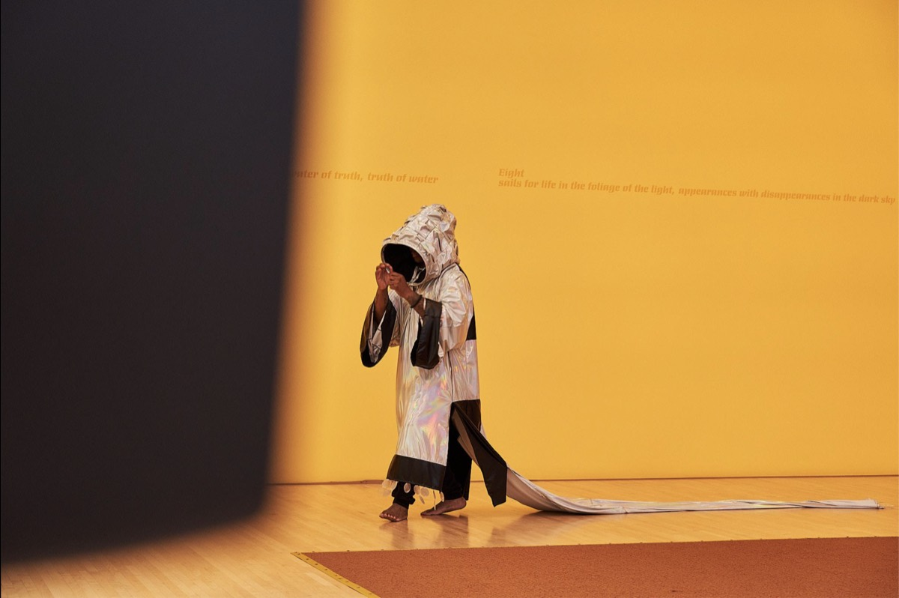

Friday, October 9
SPAM at Indexical (opens in a new tab)
1050 River St. #119Santa Cruz, CA 95060
More info and registration ↗︎ (opens in a new tab)
Performances
Doors at 8 PM, show 8:30–10 PM
-

Dorothy R. Santos
Dorothy R. Santos, Ph.D. (she/they) is a Filipino-American writer, artist, and media scholar. She earned her Ph.D. in Film and Digital Media with a designated emphasis in Computational Media from the University of California, Santa Cruz. She is an Assistant Professor of Teaching focused on Art, Justice, and Digital Media in the Art Department and Core Faculty for the Creative Technologies program at the University of California, Santa Cruz.
Photo: Stephanie Seggara
-

Jean Carla Rodea
Jean Carla Rodea is an interdisciplinary artist with a research-based practice, originally from Mexico City and currently based between San Francisco, CA, and Brooklyn, NY. Their work spans music, sound, vocality, performance, poetry, photography, video, and sculpture, moving fluidly between solo projects and collaborative, cross-disciplinary environments. They draw from shifting identities, immigration, ritual, performance, ecology, construction work, and improvisation, engaging deeply with time-based media and the diverse spaces where these interactions take place.
A central focus of their practice is the exploration of critical socio-political issues, including the politics of the body, gender, memory, and imbalanced human relationships. They are particularly invested in how time is constructed through memory, and how those memories—whether embodied or embedded within spaces—are recorded, fragmented, and continually reconstructed. This investigation opens pathways for fiction and speculative dimensions to disrupt and challenge dominant narratives.
Archival research is a recurring methodology in their work, encompassing both institutional and personal archives. From these materials, they craft speculative histories, responding to documents, physical traces, and spaces. In their engagement with the archive, they embody multiple performative roles: witness, observer, participant, and researcher, each inhabiting the temporary sites where events unfold.
Photo: Lenny Gonzalez
-

Abram Stern
Abram Stern, MFA, Ph.D. (they/he) is an artist and scholar whose work builds upon collections of government-produced media and metadata. They interrogate the material produced by public bureaucracies and the infrastructures that mediate our experiences of them. Their artwork has been exhibited at / (Slash), the Institute of Contemporary Art at Maine College of Art and Design, Real Art Ways, the Beall Center for Arts and Technology, Works|San Jose, and New Langton Arts.
Abram served as an education fellow for the Visualizing Abolition initiative at the Institute of Arts and Sciences at UC Santa Cruz, a public humanities fellow for The Humanities Institute, and a research fellow for the CITRIS Data and Democracy Institute. Their work has been published in Media-N: Journal of the New Media Caucus and Information Polity. Abram's projects and collaborations have been supported by funding from the Sunlight Foundation, the Knight Foundation, the National Science Foundation, the Mozilla Foundation, and the University of California Humanities Research Institute.
They hold a Ph.D. in Film and Digital Media from the University of California, Santa Cruz, a Master's in Fine Art of Digital Art and New Media, and a Bachelor of Fine Arts degree in Digital Media from the San Francisco Art Institute.
-

Epoch
Some say EPOCH was born from a recording that should not have survived. Others say EPOCH has always existed, that before there was an archive, there was EPOCH.
EPOCH is a composer of temporal fragments, emerging from the space between one moment and the next. They appear wherever the past begins to speak through the future. They travel through the remains of recorded time, gathering ancestral voices, signals from abandoned machines, and other fragments left behind.
EPOCH is a myth. EPOCH is a presence. EPOCH is a response. EPOCH is an answer.
EPOCH. EPOCH. EPOCH. EPOCH…